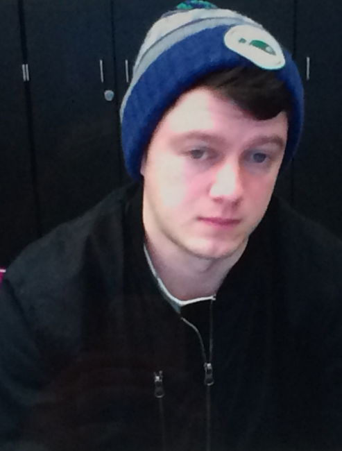
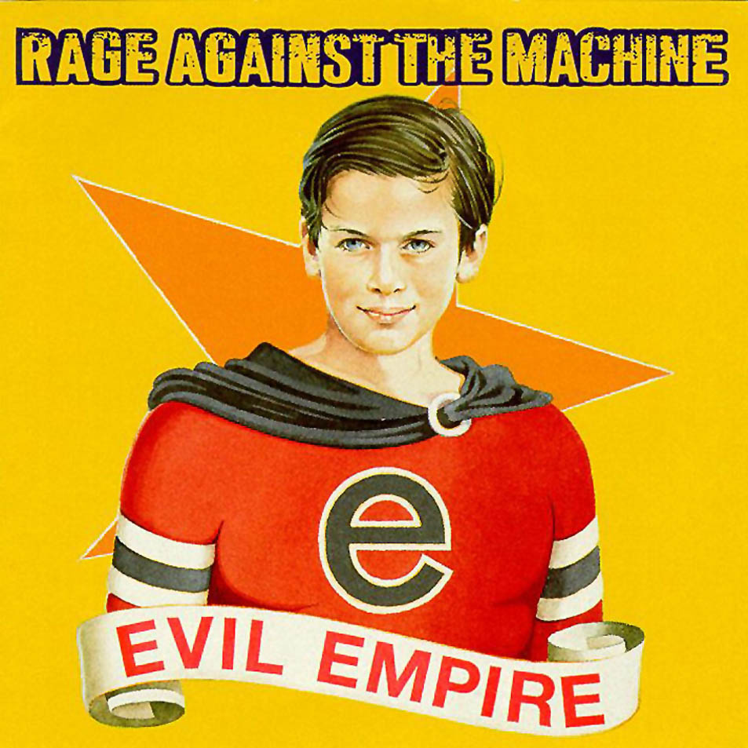
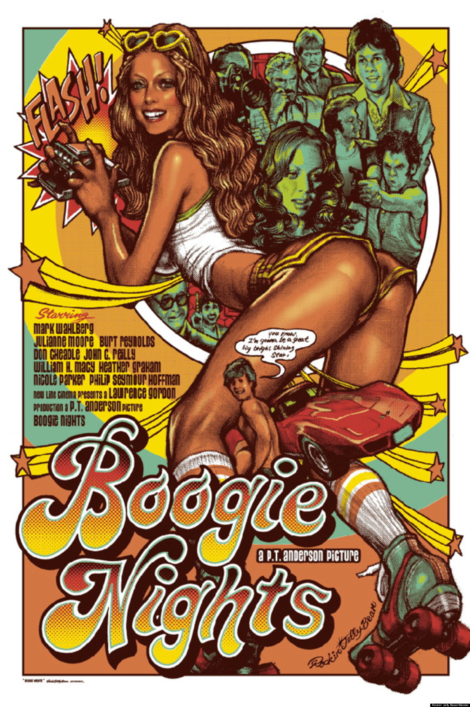
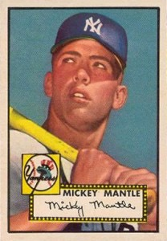
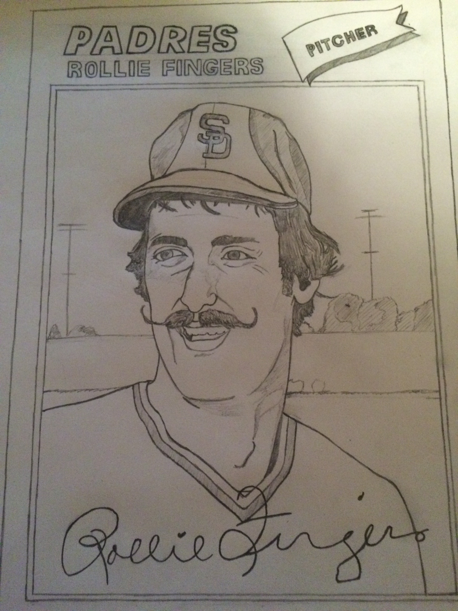
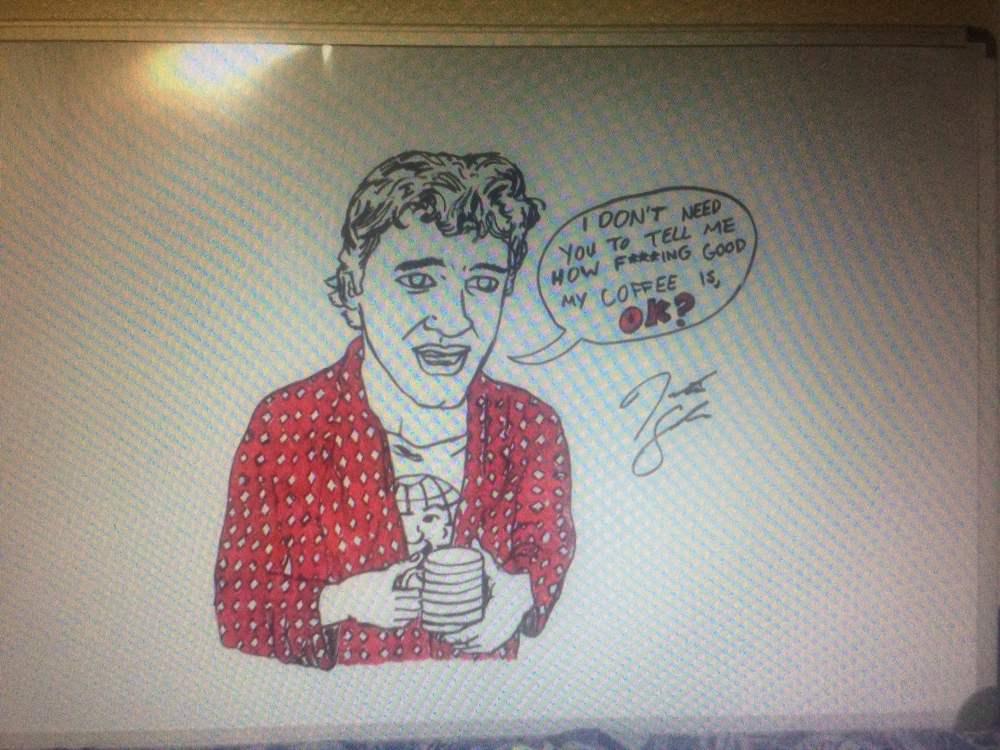
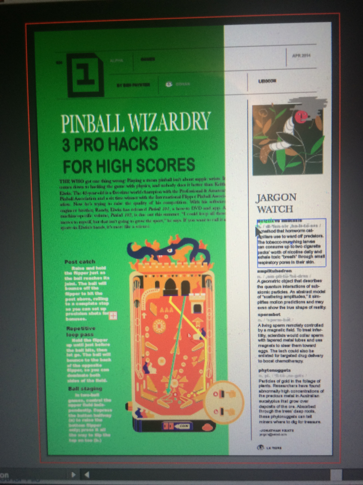
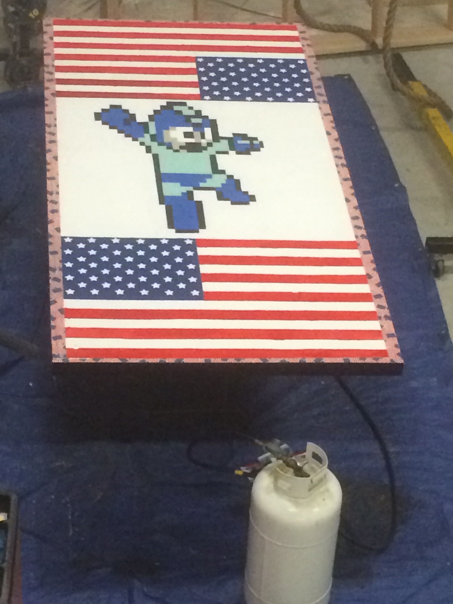
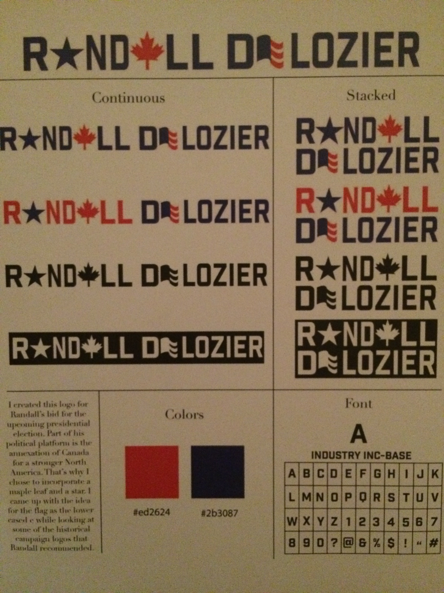

Justin Snider

My name is Justin Snider. I am a Senior (I think) at Eastern Washington University. I'm working on my Bachelor of Arts degree in Visual Communication Design and hope to have that completed in about a year.
About



I've been drawing since I was really young and I would say that's the first thing that got me into design. I like being able to put together a collection of things I've made whether it's pencil drawings, computer designed posters, or websites (I'm just a beginner at the latter, as you can see). I'm a big fan of poster art for films, album art, and vintage sports logos. I hope to someday start a T-Shirt brand that commemorates historic moments and personalities in sports.
Resume
Qualifications
- Proficiency in Photoshop, Illustrator & Indesign
- Currently learning web design
- Portfolio of work that includes numerous pieces of artwork
Education
- High school diploma with four years of Spanish completed
- Associate of Arts Degree completed
- Currently working on Bachelor of Arts in Visual Communication Design at Eastern Washington University; will be completed in June of 2017
Portfolio
- 
- 
- 
- 
- 